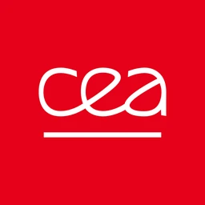
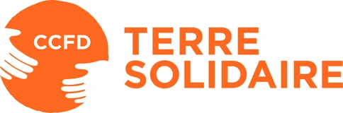
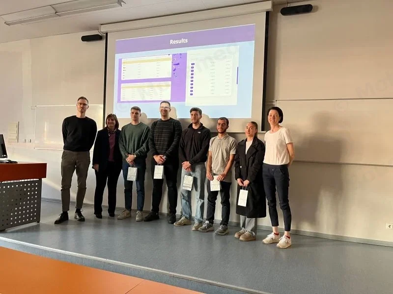
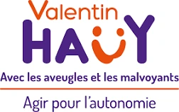
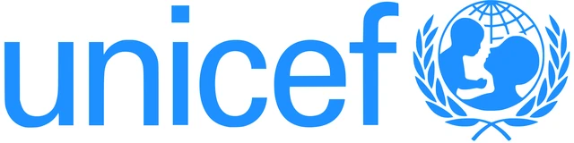

Experience
September 2025 – July 2026
14 months

CEA-LITEN: internship, then apprenticeship
Hired as an intern, then brought back on a work-study apprenticeship contract by the department to roll out what I had prototyped.
A French public research laboratory for new energy technologies (solar, batteries, hydrogen). It has 1,000 staff and is part of the CEA.
The CEA, the French Alternative Energies and Atomic Energy Commission, is France’s public research body for low-carbon energy and digital technology: €6.6 billion in resources and nearly 17,000 permanent staff in 2025.
Financial reporting
The monthly pack was compiled by hand in Excel. I replaced it with 3 Power BI dashboards, fed by SQL queries against a 20-table warehouse.
They rely on a star schema and DAX measures, and refresh every day at 5 a.m., before staff arrive.
Automating a business process
I first gathered requirements from the contract managers, then used VBA to automate the monthly matching of labour costs against declared hours.
The automation has been rolled out across 4 departments. I wrote a user guide for the 15 managers, and handled the handover.
Building a decision-support application
I designed and built a self-service web app for Life-Cycle Assessment end to end, so researchers can produce their own analyses without reworking a spreadsheet for every assumption.
It is written in object-oriented Python with Streamlit and Plotly, and versioned in GitLab. I wrote the documentation for my tools in English: how to use them and how their code works.
“He also took initiative to fetch additional literature on the topic to comfort our choices. He made sure we defined precisely enough the requirements, and that we got enough feedbacks and approval from the future users.”
“All along the internship, Mohamed has been serious in his work, paying attention to validate what had to be done beforehand, and by delivering on time.”
“[…] we recommend Mohamed for similar missions.”

CCFD-Terre Solidaire
An NGO that has worked for more than 60 years in nearly 70 countries against every form of injustice.
Where can the Grenoble branch find partners, volunteers and local actions?
- Field study: possible partners mapped, each lead assessed, then checked on site
- Project management: benchmark of solidarity events, provisional budget, reverse planning
- Communication: a message adapted to the NGO’s supervisor, the organisations met and the jury
Erasmus: Prague University of Economics and Business
I took the BIP Data Analytics Fundamentals (an Erasmus+ Blended Intensive Programme), at the Faculty of Informatics and Statistics of the Prague University of Economics and Business.
It included an online session in February, then the week on site, entirely in English. It closed with a data challenge, which our team won.
The programme attendance certificate

Association Valentin Haüy
A charity for blind and visually impaired people, in Grenoble.
I edited the videos that showed what the association does, and subtitled them in English so they could travel beyond France.
In the clip: eight seconds of the tandem sequence, with an animated title card, road shots and English subtitles. Video by Association Valentin Haüy.
National DataViz Challenge: Météo-France
Using climate data from Météo-France, France’s national weather service, our team built a dashboard, then a video explaining our statistical analyses. We presented both to the jury of the final.
The challenge had two rounds: first a selection in Grenoble against my whole year group, then the national final. Each of the 15 university institutes of technology (IUTs) that offer the Bachelor’s in Data Science sends only one team to it.

UNICEF Savoie: Mada’Eau
A micro-project run with UNICEF Savoie at Savoie Mont Blanc University, for UNICEF’s WASH programme (water, sanitation, hygiene).
In Madagascar, more than 40% of the population has no access to drinking water.
- Project management: within the lead team, from design to close
- Fundraising: a charity raffle and an online fundraiser, prizes obtained from shops and companies
- Communication: exchanges with UNICEF Savoie, raising awareness among students, a slot on France Bleu radio